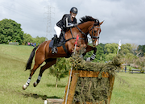
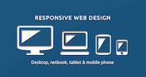
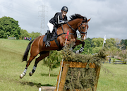
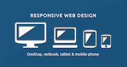

"I am extremely passionate about what I do and always put in 120% and aim to exceed the clients expectations with every project we create together."
Profile
I am a self-driven individual with a various range of technical skills. Experienced in communicating with and interpreting my clients design visions. I strive to produce high quality website designs by meeting deadlines and producing a continuous flow of web designs. Always eager to learn new skill sets and technologies. Fluent in English, Español and German.
Skills
- User Interface Design
- Business Logic & Database Design
- Client Relations
- Testing, Debugging & Documentation
Career Development
Various Clients from 2014-Present
Web Developer/Designer
Freelance web designer & developer with an unblemished client relation record. Creating quality websites, controlling budgets and designing websites and applications for satisfied clients.
Heather Edwards
Auckland
Dog Grooming Website
"Developed a successful multiple-platform website design that shows off our business and represents our staff perfectly. Has a great work ethic and always meets criteria deadlines accurately."
Donna Smith
Waikato
International Event Rider
"My new updated website design is so easy to use, my clients can book lessons with me with a simple click of the button. This website boasts my career both nation-wide and internationally while looking extremely proffesional. My business has improved so much because of my new look!"
 


